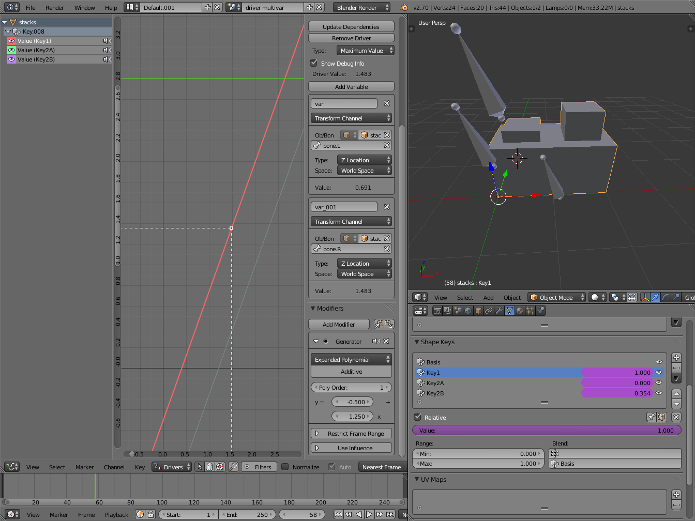
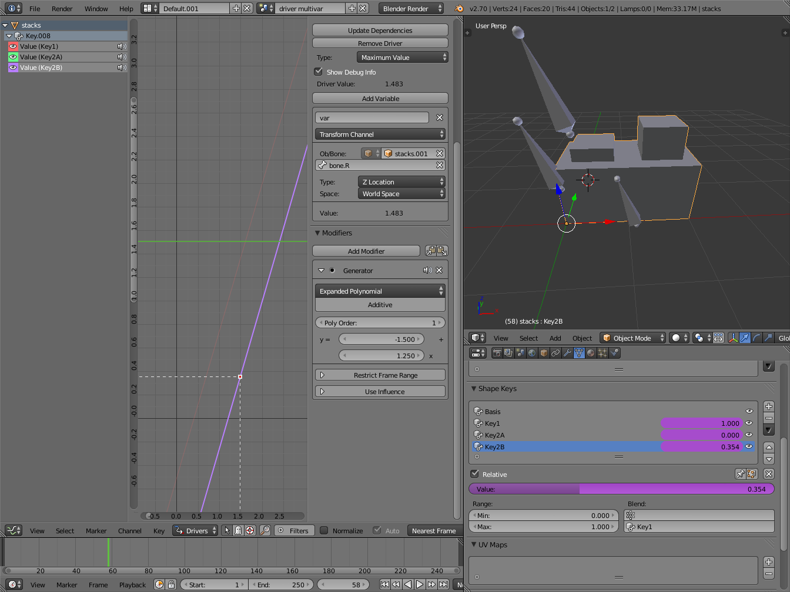
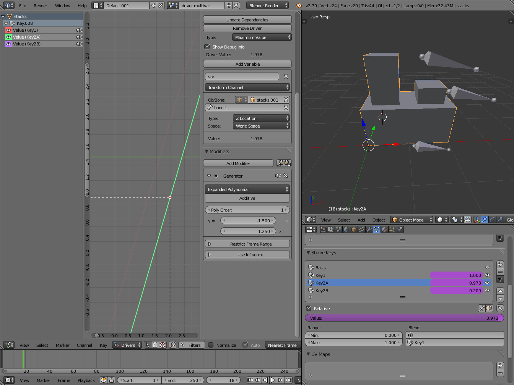

Workflow & Examples¶
Workflow¶
There are some different ways to add drivers in Blender. These are some driver examples and workflow. After adding drivers they are usually modified in the Graph Editor with the mode set the Drivers.
UI¶
The common way to add a driver to a property is to right click a property, then add a driver via the context menu.
- Add Drivers
- This will add drivers to the set of properties related to the selected one. For example, it will add drivers to X, Y, and Z for Rotation.
- Add Single Driver
- This will add a single driver to the selected property.
Drivers can also be added by pressing CTRL-D with the mouse over the property set.
Expression¶
This is a quick way to add drivers with a scripted expression.
First click the property you want to add a driver to, then add a hash # and a scripted expression.
Some examples:
#frame#frame / 20.0#sin(frame)#cos(frame)
Copy Paste¶
Drivers can be copied and pasted in the UI, via the context menu. When adding drivers with the same settings, this can save time modifying settings.
Transform Driver¶
This example shows you how setup a transform driver.
First make sure you are in the Front Ortho view. Numpad5, Numpad1.
- In object mode, select then duplicate the default Cube.
Shift-D. Move “Cube.001” to a new location. - With “Cube.001” selected, add a single driver to the Rotation Y property.
- Open the Graph Editor, set the Mode to Drivers.
- Show Only Selected is useful disabled for drivers, marked green in the picture.
- In the channels region, select the Y Euler Rotation property.
- Press
Nto open the properties region, scroll down to Drivers panel. - Change the Type to Averaged Value, this will return the averaged value of the driver variables.
- Modify the driver variable settings:
- Type – Transform Channel
- Ob/Bone – Cube
- Transform Type – X Location
- Transform Space – World Space
When finished, “Cube.001” should rotate on the Y axis when moving “Cube” left of right.
Examples¶
Driver Expression¶
Here are some examples using the scripted expression Expr to set the Driver Value.
Object Rotation.
Orbit a Point¶
Here two drivers have been added to the Cube, X Location and Y Location.
The scripted expressions are being used to set the object location.
- X Location Expr
0 + (sin(frame / 8) * 4)(frame/8): is the current frame of the animation, divided by 8 to slow the orbit down.(sin( )*4): This returns the sine of (frame/8), then multiplies by 4 for a bigger circle.0 +: is used to control the X Location offset of the orbit.
- Y Location Expr
0 + (cos(frame / 8) * 4)(frame / 8): is the current frame of the animation, divided by 8 to slow the orbit down.(cos( ) * 4): This returns the cosine of (frame/8), then multiplies by 4 for a bigger circle.0 +: is used to control the Y Location offset of the orbit.
frame is the same as bpy.context.scene.frame_current.
Driver Namespace¶
There is a list of built-in driver functions and properties. These can be displayed via the Python Console:
>>> bpy.app.driver_namespace['
__builtins__']
__doc__']
__loader__']
__name__']
__package__']
acos']
acosh']
asin']
asinh']
atan']
atan2']
atanh']
bpy']
ceil']
copysign']
cos']
cosh']
..
This script will add a function to the driver namespace,
which can then be used in the expression driver_func(frame):
import bpy
def driver_func(val):
return val * val # return val squared
# add function to driver_namespace
bpy.app.driver_namespace['driver_func'] = driver_func
Shape Key Driver¶
This example is a Shape Key Driver. The driver was added to the shape key Value.
{kind=link}
This example uses the Armature Bone “b” ‘s Z Rotation to control the Value of a Shape Key. The bone rotation mode is set to XYZ Euler.
The Driver F-Curve is mapped like so:
- Bone Z Rotation 0.0 (0.0): Shape Key value 0.0
- Bone Z Rotation -2.09 (-120.0): Shape Key value 1.0
This kind of driver can also be setup with the Variable Type Rotational Difference.
See Shape Keys for more info.
Drivers And Multiple Relative Shape Keys¶
The following screenshots illustrate combining shape keys, bones, and drivers to make multiple chained relative shape keys sharing a single root. While it lacks the convenience of the single Evaluation Time of an absolute shape key, it allows you to have more complex relationships between your shape keys.

Key1 must handle conflicting values from the two bones. |

Key2A has different generator coefficients so it is activated in a different range of the bone’s position. |

Key2B is the same as Key2A, but is controlled by the second bone. |

When both bones are low, Key2B and Key2A are deactivated and Key1 is at low influence. |

|
The Basis shape key has the stacks fully retracted. Key1 has the base fully extended. Key2A has the left stack fully extended. Key2B has the right stack fully extended. Key2A and Key2B are both relative to Key1 (as you can see in the field in the bottom right of the Shape Keys panel.
The value of Key1 is bound to the position of bones by a driver with two variables. Each variable uses the world Z coordinate of a bone and uses the maximum value to determine how much the base should be extended. The generator polynomial is crafted such that the top of the dominant stack should line up with the bone for that stack.
The value of Key2A is bound to the position of “Bone.L”. Its generator parameters are crafted such that when Key1’s value reaches 1, the value of Key2A starts increasing beyond zero. In this way, the top of the left stack will move with bone.L (mostly).
The value of Key2B is bound to the position of “Bone.R”. Its generator parameters are similar to Key2A so that the top of the right stack will move with bone.R (mostly).
Since it is quite easy for bone.L and bone.R to be in positions that indicate conflicting values for Key1 there will be times when the bones do not line up with the tops of their respective stacks. If the driver for Key1 was to use Average or Minimum instead of Maximum to determine the value of the shape key then “conflicts” between bone.L and bone.R would be resolved differently. You will choose according to the needs of your animation.